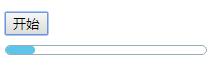
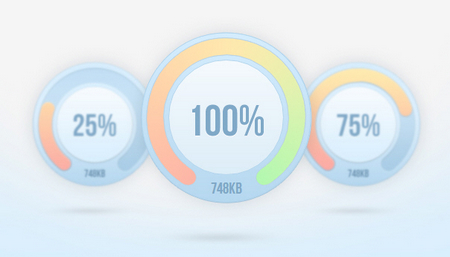

虽然现在网速都很快，不过由于我们的网站越来越复杂，有时打开一个大型网站难免会比较慢，如今用户对网站的使用体验的要求越来越高了，当网页内容加载缓慢的时候，就需要用到美观的加载进度条告诉用户还有内容正在加载。本文筛选了多个精美的jquery进度条代码素材供您参考使用下载，不过我们先来看下一个简单的进度条效果是如何用jquery实现的？
实现效果：

进度条实现源码：
<html>
<head>
<meta http-equiv="Content-Type" content="text/html; charset=utf-8" />
<title>jquery实现进度条</title>
<style>
.progressBar{width:200px;height:8px;border:1px solid #98AFB7;border-radius:5px;margin-top:10px;}
#bar{width:0px;height:8px;border-radius:5px;background:#5EC4EA;}
</style>
<script type="text/javascript">
function progressBar(){
//初始化js进度条
$("#bar").css("width","0px");
//进度条的速度，越小越快
var speed = 20;
bar = setInterval(function(){
nowWidth = parseInt($("#bar").width());
//宽度要不能大于进度条的总宽度
if(nowWidth<=200){
barWidth = (nowWidth + 1)+"px";
$("#bar").css("width",barWidth);
}else{
//进度条读满后，停止
clearInterval(bar);
}
},speed);
}
</script>
</head>
<body>
<input type="button" value="开始" onclick="progressBar()" />
<div class="progressBar"><div id="bar"></div></div>
</body>
</html>
Percentage Loader
一款轻量的 jQuery 进度条插件，以百分比的形式呈现加载进度，同时显示已加载的内容大小。

带播放暂停按钮的进度条
Query带播放暂停按钮进度条是一款可以通过按钮控制进度条是暂停或是播放动画特效。

百分比进度条动画效果
jQuery百分比进度条动画效果是一款蓝色清爽风格的网站进度条加载动画特效。

3D立体进度条加载动画特效
3D立体进度条加载动画特效是一款基于html5+css3实现3D立体百分比进度条加载特效。

星球大战水平进度条特效
星球大战jQuery水平进度条特效是一款使用彩色霓虹效果，仿造星球大战中的激光剑效果特效。

jQuery圆形进度条倒计时插件
jQuery圆形进度条倒计时插件是一款基于jQuery+html5实现的大气的网站圆圈倒计时间特效下载。

jQuery HTML5 SVG进度条特效
jQuery HTML5 SVG进度条特效是一款实用的jQuery进度条插件。

网页步骤流程进度条代码
jQuery网页步骤流程进度条代码里面包含两款不同效果的jQuery步骤进度条特效。

上传进度条动画代码
jQuery点击上传进度条动画代码是一款绿色简洁的进度条代码，没有用到背景图，代码简单易懂

可自定义刻度jQuery进度条
可自定义刻度jQuery进度条是一款可以自定义进度条刻度圆点的数量，大小，颜色等属性，并且可以通过CSS来控制圆点的外观样式。

jQuery+CSS3进度条动画特效
jQuery+CSS3进度条动画特效是一款色彩绚丽的进度条，代码简单，动画感强。

NumberProgressBar进度条
jQuery进度条插件NumberProgressBar是一款可爱的进度条，灵感来自daimajia。

内置进度条按钮
jQuery内置进度条按钮是一款非常有特色的进度条，采用CSS3样式结合jQuery脚本实现内置进度条动态按钮。